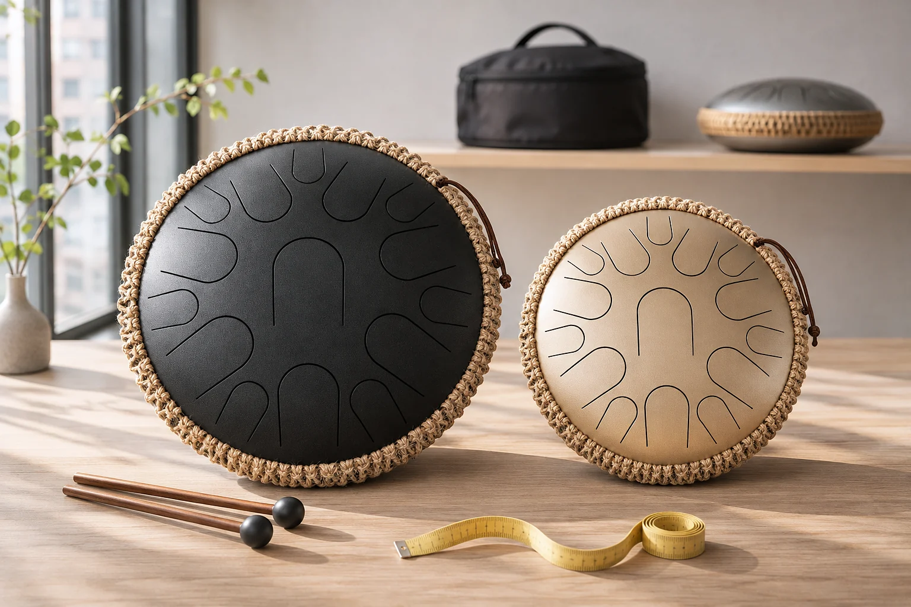
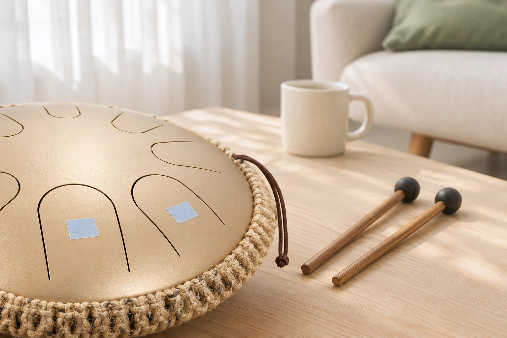
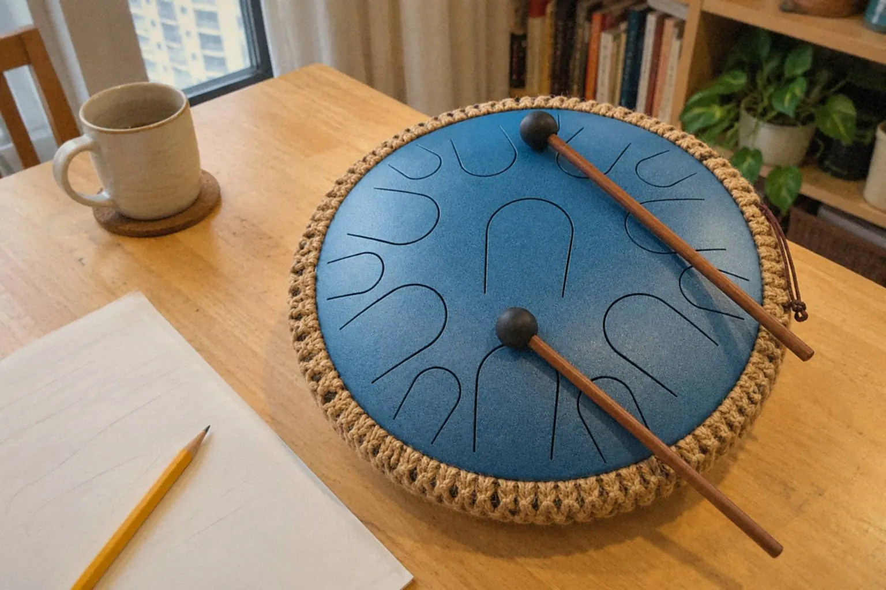
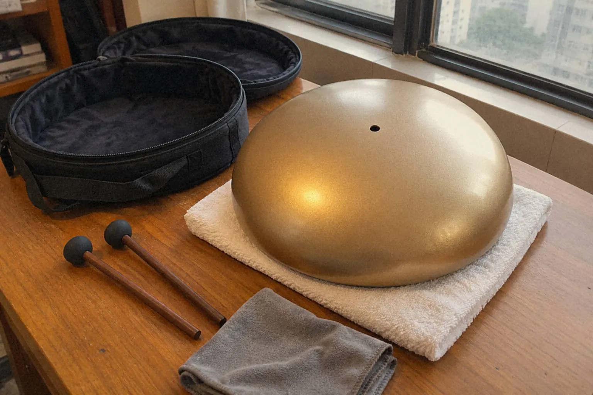
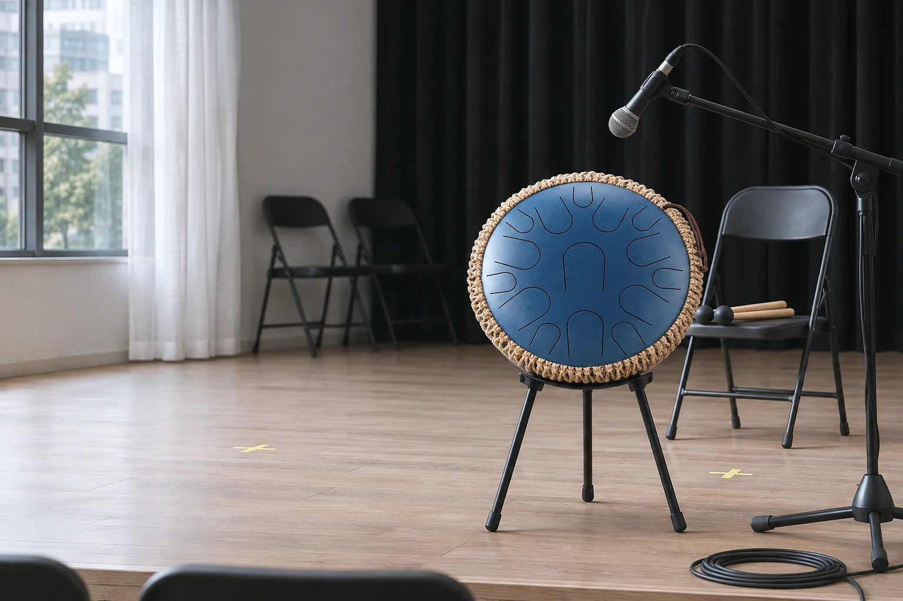

空靈鼓6 分鐘買空靈鼓之前：調式、音域與手碟分別買空靈鼓之前，先寫下想敲的兩三首歌，列出需要的音，再逐一對照那面鼓的實際音列。調式名稱、貼紙數字和外形都只是線索，鼓上有沒有那些音才算數。
空靈鼓4 分鐘空靈鼓即興：由兩個音開始空靈鼓即興不用先懂很多理論。選兩個音，限定四拍長度，重複一個動機，再只改句尾，已經是即興。音高選擇少了，注意力便能移到「何時出聲」和「何時停下」。
空靈鼓5 分鐘空靈鼓的層次與簡單編排空靈鼓要有層次，先讓主要的音稍為突出，其他音輕一些，句尾留出空間。這個差別可以很小。編排也一樣，保留旋律，再少量加低音和回應，不必填滿所有音。
空靈鼓3 分鐘空靈鼓保養空靈鼓的保養，日常只有三件事：用乾淨軟布輕抹，收納前保持乾爽，移動時穩穩托住鼓身。不要扳動音舌，也不要自行調音。其他清潔細節，以製作者的材料與塗層說明為準。
空靈鼓4 分鐘空靈鼓演出與合奏空靈鼓上台，聲音要集中，先把鼓放穩，確認手部到得了每個音，再用最強和最弱的段落試收音。入場、第一句和結尾都要連同座位一起彩排，別留到現場才第一次面對。